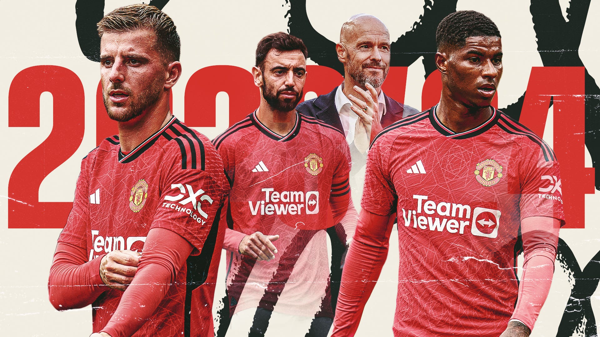
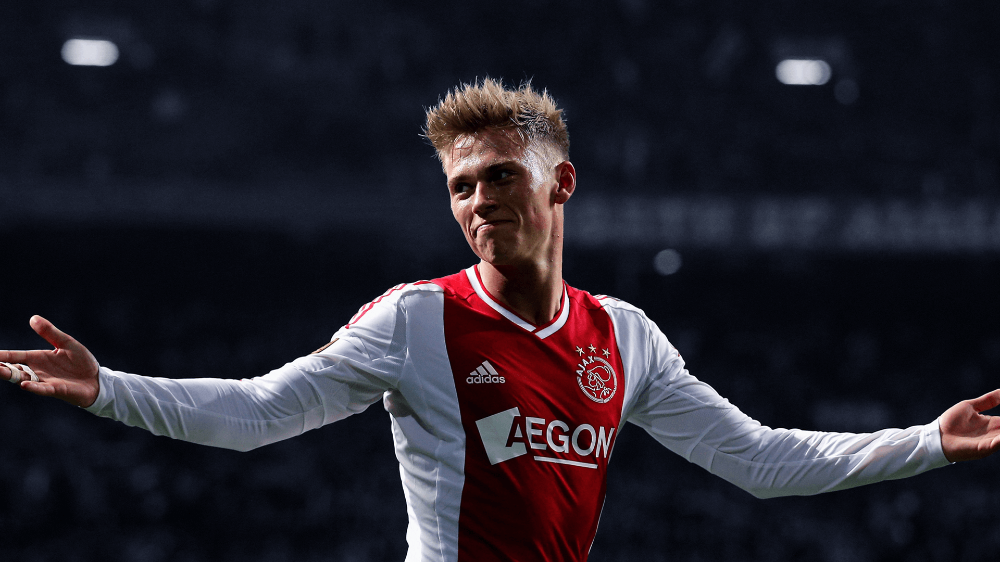
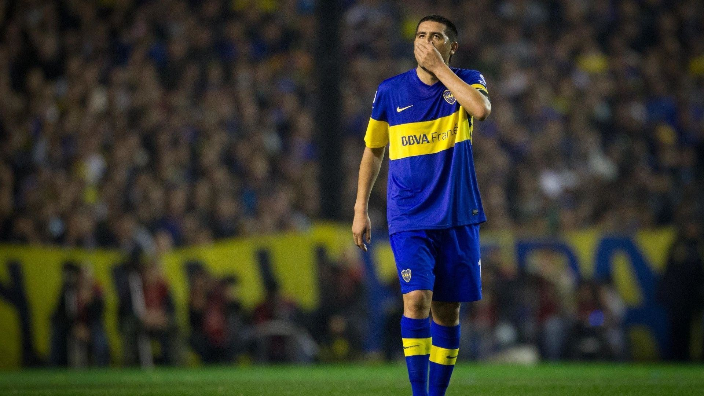
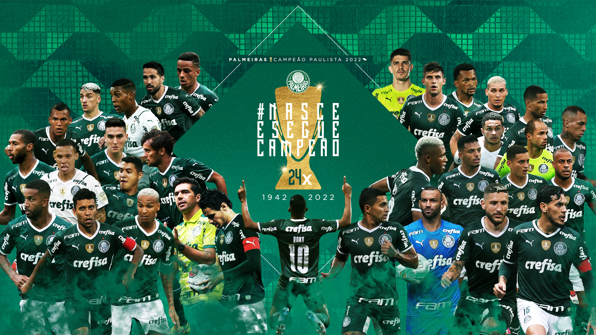

La Bundesliga se inauguro el 24 de Agosto del año 1963, hasta la fecha se han disputado un total de 59 ediciones, El club mas ganador en la historia de la liga es el FC BAYERN MÚNICH con mas 35 títulos nacionales. Deutsche Fußball Liga (DFL) es el organizador oficial de la liga.
LaLiga se inauguro el 10 de febrero del año 1928, hasta la fecha se han disputado un total de 92 ediciones, siendo el REAL MADRID el club mas ganador con 35 títulos. Real Federación Española de Fútbol (RFEF) es el organizador oficial de LaLiga.
La Ligue 1 se inauguro el 11 de septiembre del año 1932, hasta la fecha se han disputado un total de 73 ediciones, siendo el PARÍS SAINT-GERMAIN el club mas ganador con 45 títulos. Ligue de Football Professionnel es el organizador oficial de la Ligue 1.

La Liga se disputa desde el año 1897, aunque la Eredivisie comenzó en la temporoda 1956-57, hasta la fecha se han disputado un total de 68 ediciones, siendo el AJAX el club mas ganador con 21 títulos. Real Federación de Fútbol de los Países Bajos (KNVB) es el organizador oficial.
La Premier League se inauguro el 15 de agosto del año 1992, hasta la fecha se han disputado un total de 32 ediciones, siendo el MANCHESTER UNITED el club mas ganador con 20 títulos. The Football Association (The FA) es el organizador oficial de la liga Inglesa.

La Serie A Tim se inauguro el 6 de octubre del año 1929, hasta la fecha se han disputado un total de 95 ediciones, siendo el club JUVENTUS DE TURIN el club mas ganador con 36 títulos de liga. Lega Serie A (LNPA) es el organizador oficial del campeonato profecional de futbol italiano.
El campeonato de Primera División Argentino se inauguro el 12 de Abril del año 1891, hasta la fecha se han disputado un total de 132 ediciones, El club con mas titulos es RIVER PLATE con 38 títulos nacionales. Liga Profesional de Fútbol Argentino es el organizador oficial de la liga.

El Brasileirao se inauguro el 23 de Agosto del año 1959, hasta la fecha se han disputado un total de 69 ediciones, El club con mas ganador ese el PALMEIRAS con 12 títulos. Confederación Brasileña de Fútbol (CBF) es el organizador oficial del campeonato paulista.
El Campeonato Nacional desde el 31 de mayo del año 1933, hasta la fecha se han disputado un total de 90 ediciones, siendo COLO-COLO el club mas ganador con 33 títulos nacionales. La ANFP es el organizador oficial del Campeonato Nacional Chileno.

La liga nacional de futbol Colombiano se inaguro 15 de agosto del año 1948 , hasta la fecha se han disputado un total de 75 ediciones, siendo el club ATLETICO NACIONAL mas ganador con 17 títulos. División Mayor del Fútbol Colombiano es el organizador oficial.

La Primera División del futbol Peruano se inauguro el año 1966, hasta la fecha se han disputado un total de 58 ediciones, siendo el club UNIVERSITARIO mas ganador con 27 títulos. Federación Peruana de Fútbol es el organizador oficial de la liga Inglesa.
Primera División del futbol Uruguayo inauguro el año 1900, hasta la fecha se han disputado un total de 124 ediciones, siendO PEÑAROL el club mas ganador con 51 títulos de liga. La Asociación Urug de futbol es el organizador oficial del campeonato Uruguayo.